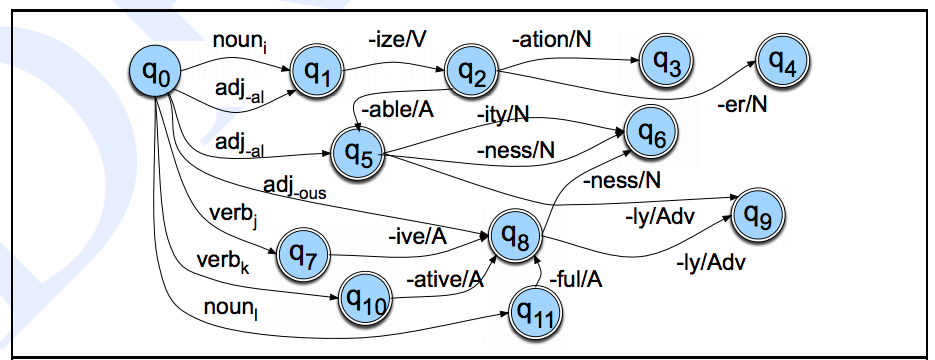
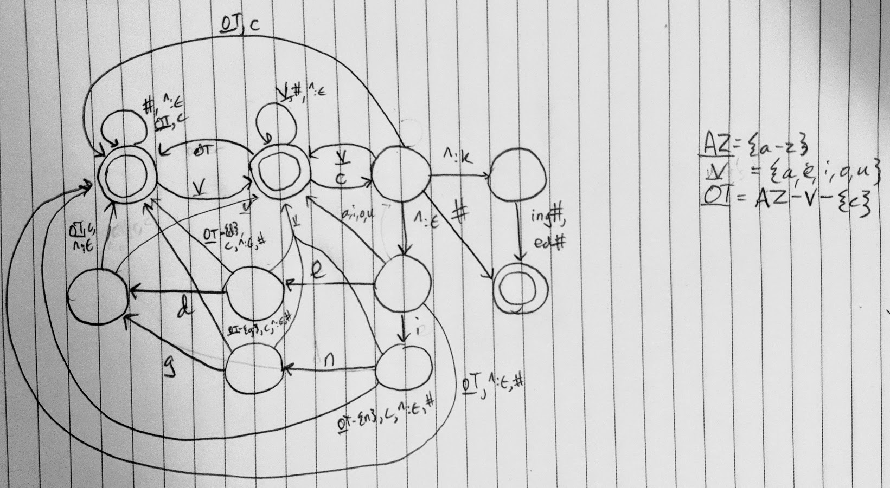
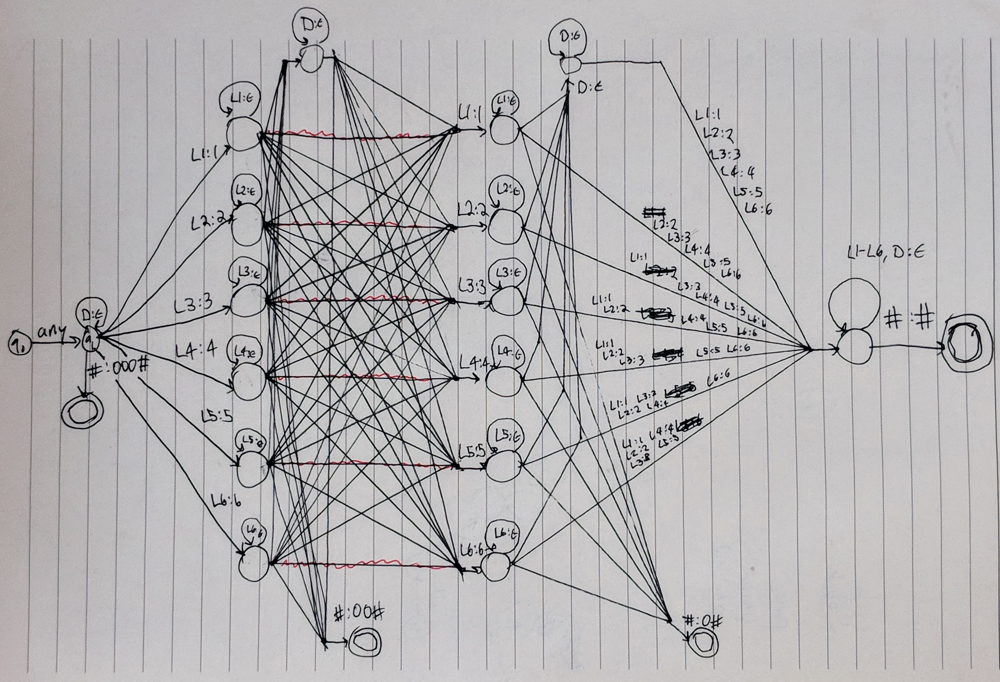

Speech and Language Processing 2ed, Chapter 3, FST's
Notes
3.4 FSTs
- Seven parts of an FST
- \(Q = q_0, \ldots, q_{N-1}\), finite set of \(N\) states
- \(\Sigma\), finite set containing input strings
- \(\Delta\), finite set containg output strings
- \(q_0 \in Q\), start state
- \(F \subseteq Q\), the set of final states
- \(\delta(q,w)\), transition function between state and string pair and sets of new states. (There could be more than one.)
- \(\sigma(q,w)\), output function, like above but returns a set of possible strings
- FSTs closed under union, inversion, composition, but not under difference, complementation, and intersection.
- Sadly, not every FST can be determinized
- Subtype of FST's called sequential transducers
- deterministic on input –> \(\epsilon\) only allowed in \(\Delta\)
- generalization: subsequentual transducer, which generates additional output at final states
- Useful because they are linear on input
- Subsequential transducers can be determinized and minimized
- Sequential and subsequential transducers can't handle ambiguity
- Generalization of the subsequential transducer: p-/subsequential transducer, which allows for /p final output strings to be associated with each final state.
3.5 FSTs for Morphological Parsing
- Words treated as having lexical and surface levels
- Each has one character per arc/"segment on the tape"
- Two-level Morphology
- \(\Sigma\) and \(\Delta\) combined into \(\Sigma^\prime \subseteq \Sigma \times \Delta\) where \(\Sigma^\prime\) consists of corresponding pairs called feasible pairs
- Application in morphological parsing: can take surface forms and produce lexical forms
- Actually, produces an intermediate form, which another FST uses to produce a lexical form
- Intermediate tape contains morpheme and word boundaries as well as what I might call the least marked allomorph of a morpheme (like {s} for English plural)
3.6 Orthographic Rules
Lexical f o x +N +Pl Intermediate f o x ^ s # Surface f o x e s
- To account for orthographic rules (like foxes instead of */foxs/), an intermediate tape needs to be introduced and another FST needs to be created for each orthographic rule to apply orthographic rules to the intermediate tape
3.7 Combining FST Lexicon and Rules
- As shown above, Lexicon-FST maps between lexical and intermediate strings, and orthographic rules map between intermediate and surface strings
- Orthographic rules can be applied in series or parallel
- Advantage of FSTs: can flow either way depending on whether we want to generate or parse
- FST's are, in general, nondeterministic and to function efficiently must incorporate search algorithms because of the size of the search space
- To collapse the cascade between levels, can compose transducers in series (already seen in C2)
- Transducers in parallel can be combined by automaton intersection: takes Cartesian product of all states in all parallel machines.
- Fortunately, morphological parsing FST's are usually generated and users work at a higher level of abstraction
3.8 Lexicon-free FSTs: The Porter Stemmer
- Some applications only care about parsing a word's lemma (and not, e.g., detailed morphosyntactic information)
- We can do without a lexicon in this case
- Porter algorithm uses cascaded rewrite rules, e.g. ATIONAL –> ATE, ING –> \(\epsilon\)
- Not perfect: DOING –> DOE, EUROPEAN –> EUROPEAN (not EUROPE)
3.9 Word and Sentence Tokenization
- So far, turned words into morphemes
- Also need to turn text into words and sentences
- Modern tokenization techniques use ML, can get acceptable results using rule-based approaches
- Some languages like Chinese don't have reliable whitespace for tokenization
- Good baseline for Chinese: maximum matching/maxmatch, greedy algorithm that takes maximum length that can still be found in a dictionary
- maxmatch still struggles with unknown genres
3.10 Spelling correction
- Three increasingly broader problems to be solved:
- Detecting errors that result in non-words
- Correcting errors that result in non-words without knowing about the word's context
- Using context to detect and correct spelling errors even if the input is a real English word
- String edit distance useful
3.11 Minimum Edit Distance
- Minimal number of mutations (insertion, deletion, substitution) needed to turn one string into another
- Each operation is assigned a cost, Levenshtein distance when all costs are 1
- Can use DP for calculating edit distance because it has optimal substructure
- MED also useful for finding word alignments, useful in many applications
Exercises
3.1

3.2
This is the existing machine:

This is an extended version that handles sh and ch. (Note that some exotic sequences like zh or xh are not necessarily handled correctly, but I think we can treat them as out of scope.)

State q6 was introduced to model the state of having just seen a c. It can only be reached if a c is encountered at q0. If an h, s, z, or x is encountered, we go to q1, otherwise we go back to q0. Obviously we need the h because we want to handle ch, but we also need the s, z, and x to go to q1 because if we sent them to q0 we would not be able to handle a more exotic word like stankiewicz^s#. From here, it is just as in the other cases: if a morpheme boundary is encountered then we are able to make the transition to q2, etc.
We're not done yet. We need to add h to the q5 –> q1 edge as well as the q1 –> q1 loop. Note that this does not enforce that there was necessarily an s or a c before it, so a word like haggadahs would have an e inserted, yielding * haggadahes. But there are no native English words I can think of that end in an h that is not preceded by a c or s, so again, this seems like a fair simplification.
Finally, we also need to add h to the q2 –> q1 edge, as well as the q0 –> q0 loop. (We need this or else we'd reject any word that starts with an h if the interpretation of other is "any character not explicitly mentioned at least once somewhere in the FST".)
Test word list:
mash^s#task^s#moss^s#box^s#church^s#ash^s#hash^set^s#aspic^s#
3.3
Let's assume that a k is inserted when there is an environment like ...Vc_^{ing,ed}#. I.e., there is a vowel followed by a c, followed by a morpheme boundary, followed by ing or ed, ending the word. This is the FST:

The first state is the default state. The state to its left models just having seen a vowel. The state to the right models just having seen a vowel and a c. From here, we must either (1) end the word, (2) end the word with king# or ked#, or return to one of the previous states.
3.5
To simplify the labels, let's use these abbreviations:
D = {a, e, h, i, o, u, w, y} L1 = {b, f, p, v} L2 = {c, g, j, k, q, s, x, z} L3 = {d, t} L4 = {l} L5 = {m, n} L6 = {r} any = a-z
Let's also assume the input is terminated by #.
This is the FST:

Instead of carrying out the steps in sequence as the algorithm's description suggests, we need to carry them out all at once since the FST can only iterate over the input once. For instance, in order to account for step (c), we add null-emitting loops to states that have just accepted a letter,
3.9
Let's assume that if we encountered a z, s, or x at q5 we would instead transition to q0. If this happened, q1 would no longer correspond to the state of just having encountered one or more z, s, or x characters. Then if we encountered a string like ...s^ss^s#, we would incorrectly fail to insert an e.
3.10
Setting all costs to 1, we find that brief and divers are equidistant from drive. If substituion cost were 2, however, divers would be closer.
| # | d | r | i | v | e | |
| # | 0 | 1 | 2 | 3 | 4 | 5 |
| b | 1 | 1 | 2 | 3 | 4 | 5 |
| r | 2 | 2 | 1 | 2 | 3 | 4 |
| i | 3 | 3 | 2 | 1 | 2 | 3 |
| e | 4 | 4 | 3 | 2 | 3 | 2 |
| f | 5 | 5 | 4 | 3 | 3 | 3 |
Cost of 3:
- substitute d
- insert v
- delete f
| # | d | r | i | v | e | |
| # | 0 | 1 | 2 | 3 | 4 | 5 |
| d | 1 | 0 | 1 | 2 | 3 | 4 |
| i | 2 | 1 | 1 | 1 | 2 | 3 |
| v | 3 | 2 | 2 | 2 | 1 | 2 |
| e | 4 | 3 | 3 | 3 | 2 | 1 |
| r | 5 | 4 | 3 | 4 | 3 | 2 |
| s | 6 | 5 | 4 | 4 | 4 | 3 |
Cost of 3:
- insert r
- delete r
- delete s
3.11
def dist(source, target): source = " " + source target = " " + target ls = len(source) lt = len(target) m = [[0 for j in range(lt)] for i in range(ls)] for i in range(ls): m[i][0] = i for j in range(lt): m[0][j] = j for i in range(1,ls): for j in range(1,lt): insc = m[i][j-1] delc = m[i-1][j] subc = m[i-1][j-1] cost = min(insc, delc, subc) + (1 if source[i] != target[j] else 0) m[i][j] = cost return m[ls-1][lt-1] dist("divers", "drive")